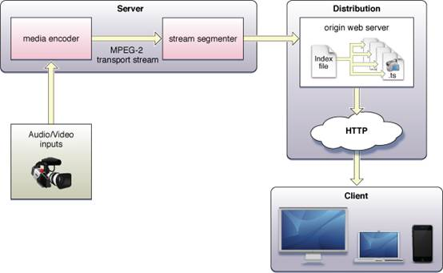
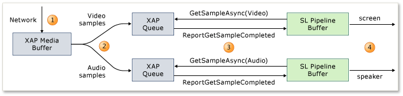
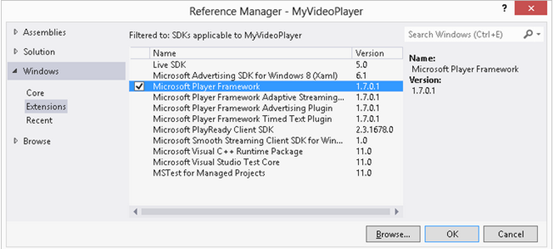
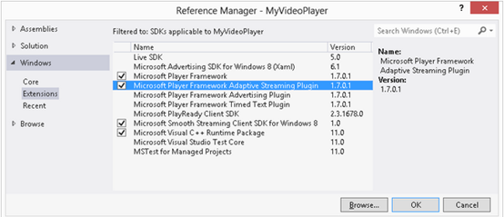
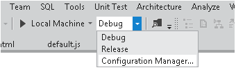
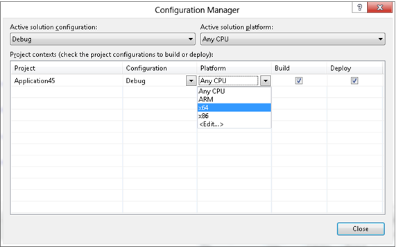
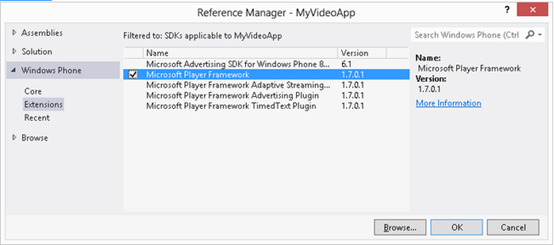

1 Ios和Android live streaming简介
2 WP 8 和windows 8中的live streaming
2.2.3 Windows 和windows phone中的不同
1 Ios和Android live streaming简介
Ios的HTTP Live Streaming 可以让你通过http协议从一个web服务器发送音视频到你的ios设备上包括iPhone, iPad, iPod touch, and Apple TV。HTTP Live Streaming 支持实时广播和预录制的内容。HTTP Live Streaming 支持多种不同bit率的流, 客户端软件，可以智能化切换流随着网络带宽的变化。 HTTP Live Streaming 还提供基于https的媒体加密和用户鉴权，让出版商保护他们的产品。
对于android 在http和rtsp上的steaming,这里有一些额外的要求：
● 对于3GPP和MPEG-4的容器, moov atoms必须先于任何 mdat atoms，也必须成功 ftyp atoms。
● 对于3GPP, MPEG-4, 和WebM 容器, 对应同一时间偏移的音视频不能超过500kb。为了尽量减少此音频/视频漂移，考虑交错的音频和视频在更小的区块内。
2 WP 8 和windows 8中的live streaming
微软为媒体播放提供了多种方法，在微软提供Player Framework之前，开发一个具有媒体播放的应用并不容易，开发人员需要支持自适应流、字幕、广告标准集成、DVR式播放控制，以及其他功能。Player Framework是微软提供的一个播放器，开发者可以在其基础上继续进行开发而不用处理媒体播放的细节问题，能够极大的提高开发效率。
以下首先介绍Player Framework出现之前的开发方式和相关技术，然后介绍Player Framework及其使用方法。
2.1传统方法
2.1.1 打开媒体
当 MediaStreamSource 对象传递给 MediaElement.SetSource 方法时，MediaElement 将其状态更改为 Opening 并调用MediaStreamSource.OpenMediaAsync 方法。 MediaStreamSource 执行应响应通过调用 ReportOpenMediaCompleted 来响应（一旦它可将媒体描述为 Silverlight）。
媒体的描述中必须包括以下信息：
● 持续时间
● 无论媒体是否支持查找。
● 受保护的内容，数字版权管理元数据需要找到适当的许可证。
说明也将包含一个或多个流有关的信息。 每个流的说明必须包含以下信息：
● 编解码器的标识。
● 一组称为编解码器私有数据的字节，将会初始化该编解码器。
如果媒体有视频流，该流的描述也必须包含以下信息：
● 原始编码图像的宽度和高度。
这一信息通过 MediaStreamSource.ReportOpenMediaCompleted 方法传递给 Silverlight。 ReportOpenMediaCompleted 方法采用以下属性：
● 描述媒介的特定属性和值的字典。
● 为视频和音频同时收集 MediaStreamDescription 目标。 由特定属性和值的字典创建的每个对象传递上述流的信息。
l 视频 CodecPrivateData
视频编解码器由与 MediaStreamAttributeKeys.VideoFourCC 一起存储的一个四字符代码来标识。 编解码器初始化字节作为 base16 编码的字符串存储在 MediaStreamAttributeKeys.CodecPrivateData。 每个编码解码器的详细信息如下：
H.264
|
VideoFourCC |
"H264" |
|
CodecPrivateData |
Base16 编码格式的字符串： 0x00000001 SequenceParameterSet 0x00000001 PictureParameterSet 有关启动代码、序列参数设置 (SPS) 和图片参数设置 （PPS） 格式的详细信息，请参见 ISO/IEC-14496-10。 |
|
CodecPrivateDate 示例： |
640 X 360 @ 1Mbps 的示例 "00000001674D401E965201405FF2E020100000000168EF3880" |
VC-1：高级配置文件
|
VideoFourCC |
"WVC1" |
|
CodecPrivateData |
Base16 编码格式的字符串： ASFBindingByte 0x0000010F SequenceLayer 0x0000010E EntryPointLayer SequenceLayer 和 EntryPointLayer，封装（填充字节）的表单。 开始编解码器后缀、序列图层和入口点图层的格式的详细信息，请参阅 VC-1。 有关 ASFBinding 字体格式的详细信息，请参见 ASF。 |
|
CodecPrivateDate 示例： |
1280 X 720 @ 2.436Mbps 的示例 "250000010FD3BE27F1678A27F859E80450824A56DCECC00000010E5A67F840" |
VC-1：主要和简单的配置文件
|
VideoFourCC |
"WMV3" |
|
CodecPrivateData |
Base16 编码格式的字符串： 0x0000010F SequenceLayer SequenceLayer 是封装（填充字节）的表单。 有关启动编码器后缀和序列图层格式的详细信息，请参见 VC 1。 |
MPEG - 4 第 2 部分： 简单 & 高级配置文件
|
VideoFourCC |
"MP43" |
|
CodecPrivateData |
没有所需的 CodecPrivateData |
Windows Media Video 7 到 9
|
VideoFourCC |
"WMVA" 参见 VC-1 高级配置文件。 |
|
VideoFourCC |
"WMV2" 主要和简单的配置文件，请参阅 VC-1。 |
|
VideoFourCC |
"WMV1" 主要和简单的配置文件，请参阅 VC-1。 |
RGBA
|
VideoFourCC |
"RGBA" |
|
CodecPrivateData |
没有所需的 CodecPrivateData。 |
YV12
|
VideoFourCC |
"YV12" |
|
CodecPrivateData |
没有所需的 CodecPrivateData |
|
|
|
|
对于 Windows 开发人员：Windows 编解码器上的 MSDN 文档可参阅 VIDEOINFOHEADER， VIDEOINFOHEADER2， MPEG2VIDEOINFO或类似的结构。 Silverlight 所使用的 CodecPrivateData 对应的末尾追加的可变长度数据。 |
l 音频 CodecPrivateData
音频编码解码器使用 WAVEFORMATEX 结构被标识和初始化。 在某些情况下，额外的数据遵循 WAVEFORMATEX 结构。 在其他情况下，WAVEFORMATEX 结构是一个更大的结构的一部分。 在所有情况下，结构和其后面的数据一起转换成 little-endian base16 编码的字符串并与MediaStreamAttributeKeys.CodecPrivateData 存储在一起。
CodecPrivateData 中的前 16 位总是相对应 WAVEFORMATEX 结构，wFormatTag 中的第一个成员。 此值用于标识编码解码器并通知 Silverlight 剩余的数据如何被解释。 Windows 平台 SDK 头文件 mmreg.h 包含许多如下所述枚举和结构。
每个编码解码器的详细信息如下：
AAC (ISO 高级音频编码)
以下是用于 Silverlight 桌面的 AAC 推荐格式和 Silverlight for Windows Phone：
|
wfx.wFormatTag |
0XFF （WAVE_FORMAT_RAW_AAC1） |
|
CodecPrivateData |
WAVEFORMATEX 结构后跟 AudioSpecificConfig 数据。 AudioSpecificConfig 结构描述在 ISO/IEC-14496-3 |
下面的示例演示 48kHz 立体声内容的 HE-AAC v2 的 CodecPrivateData（启用 SBR 和 PS）。
"FF000100C05D0000E02E0000040010000500130856E598"
下面的示例演示 48kHz 立体声的 96kbps AAC-LC 的 CodecPrivateData：
"FF00020080BB0000E02E00000400100002001190"
以下是 Silverlight for Windows Phone AAC 推荐格式:
|
wfx.wFormatTag |
0X1610 (WAVE_FORMAT_MPEG_HEAAC) |
|
CodecPrivateData |
HEAACWAVEFORMAT 结构后跟 AudioSpecificConfig 数据 AudioSpecificConfig 结构描述在 ISO/IEC-14496-3 |
下面的示例演示 48kHz 立体声内容的 HE-AAC v2 的 CodecPrivateData（启用 SBR 和 PS）：
"10160100C05D0000E02E00000400100011000000FE000000000000000000130856E598"
以下是被弃用的 AAC 格式：
|
wfx.wFormatTag |
0X1601 (WAVE_FORMAT_MPEG_RAW_AAC) |
|
CodecPrivateData |
WAVEFORMATEX 结构 |
关于他行政协调会，在 WAVEFORMATEX 的 nSamplesPerSecond 字段应该是 pre-SBR (光谱波段复制） 和 WAVEFORMATEX 中的 nChannels 字段应预 PS （参数立体声）。
WMA (Windows Media Audio)
下表显示 Windows 媒体音频 V3 的编解码器信息。
|
wfx.wFormatTag |
0x162 (WAVE_FORMAT_WMAUDIO3) |
|
CodecPrivateData |
WMAUDIO3WAVEFORMAT 结构 |
下面的示例演示一种 44.1kHz 立体声的 Windows Media Audio V3 CodecPrivateData：
"6201020044AC0000451F0000CF05100012001000030000000000000000000000E00042C0"
下表显示 Windows 媒体音频 V2 的编解码器信息。
|
wfx.wFormatTag |
0x161 (WAVE_FORMAT_WMAUDIO2) |
|
CodecPrivateData |
WMAUDIO2WAVEFORMAT 结构 |
下表显示 Windows 媒体音频 V1 的编解码器信息。
|
wfx.wFormatTag |
0X160 (WAVE_FORMAT_MSAUDIO1) |
|
CodecPrivateData |
MSAUDIO1WAVEFORMAT 结构 |
MP3 (ISO MPEG-1 Layer III)
|
wfx.wFormatTag |
0X55 (WAVE_FORMAT_MPEGLAYER3) |
|
CodecPrivateData |
有关 MP3 的详细信息，请参见 ISO/IEC 13818-3。
以下示例显示 MP3 (ISO MPEG 1 层 III) CodecPrivateData 22.05 kHz 立体声 80 kbps 522 个字节，每个框架，每个块一帧时：
"550002002256000010270000010000000C000100000000000A0201000000"
PCM/WAV
|
wfx.wFormatTag |
1 (WAVE_FORMAT_PCM) |
|
CodecPrivateData |
WAVEFORMATEX 没有特定编码解码器的数据结构。 |
下面的示例演示一种 44.1kHz 立体声以 96 kbps 速率的 PCM/WAV CodecPrivateData：
"0100020080BB0000E02E0000040010000000"
2.1.2 状态管理
2.1.2.1 媒体状态
虽然 MediaElement有 MediaElement.CurrentState 定义的明确的状态，MediaStreamSource 对象并没有。 相反，MediaStreamSource 的状态是由唤醒的方法来确定的。 例如，如果已调用 MediaStreamSource的 SeekAsync 方法并且其还未通过调用 ReportSeekCompleted 而响应，则将其视为处于“求”状态。 一般情况下，MediaStreamSource 通常执行以下活动之一：
● “开启”
MediaElement 已调用了 OpenMediaAsync，但 MediaStreamSource 执行未以 ReportOpenMediaCompleted 进行回应。
● “查找”
MediaElement 已调用了 SeekAsync，但 MediaStreamSource 执行未以 ReportSeekCompleted 进行回应。
● “缓存”
MediaElement 已为媒体流之一调用了 GetSampleAsync，然后 MediaStreamSource 将以 ReportGetSampleProgress 进行响应。
● “流式”
MediaStreamSource 不回应 ReportGetSampleProgress。 换言之，一旦示例可用，MediaStreamSource 将使用对ReportGetSampleCompleted 的调用来响应 GetSampleAsync 调用。
● "mediaEnded"
MediaStreamSource 通知了 MediaElement最终示例为所有流而传递。 这通过报告对应于 GetSampleAsync 的特殊结尾流样本来做到的。
● “关闭”
已调用 CloseMedia。
2.1.2.2 流状态
MediaStreamSource 实现可能会发现它同样有助于维护每个流状态。 例如，应用程序可能会停止下载音频，如果其音频缓冲区队列已满。
2.1.2.3 同步
MediaElement 一次性只调用一个 MediaStreamSource方法。 因此，SeekAsync 请求不会在同一时间到达 GetSampleAsync 请求，也不会同时达到两个 GetSampleAsync 请求。 然而，仍然存在开发人员必须考虑的一些情况 MediaStreamSource：
查找
● 在桌面 Silverlight 中，在已完成所有优秀示例请求前，将不会传递 SeekAsync。 一个解决方案是第二次报告前面的示例。
● 在 Silverlight for Windows Phone 中，当优秀示例请求被挂起时，SeekAsync 请求将被传递。 不过，当该示例完成时，Silverlight for Windows Phone 会错误地将其扔掉。 如果该示例是一个密钥帧，它可能需要第二次报告示例。
缓冲转换
● 在 Silverlight for Windows Phone 中，调用ReportGetSampleProgress 不会阻止随后 GetSampleAsync 到达的调用。 缓冲是媒体状态，不是流状态。 调用任何流的 ReportGetSampleCompleted 将导致 MediaElement 退出缓冲。 因此，在对所有流完成缓冲前MediaStreamSource 不应填写任何流的示例。
2.1.3 缓冲区管理
创建一个MediaStreamSource 最具挑战性任务之一是实现缓冲区管理逻辑。 可怜的逻辑可能导致过多条目进入缓冲状态和 post-starvation 音频/视频 (AV) 同步问题。
MediaStreamSource 实现必须考虑到两个缓冲区：
1. 管道保持的缓冲区。 此缓冲区包含所有由还未呈现的 MediaStreamSource 报告的示例。
2. 通过 MediaStreamSource 实现本身维护缓冲区。 MediaElement 处于缓冲状态时（例如，当管道不排水示例时），此缓冲区可能很深。
MediaStreamSource 实现可查看如下图所示：

在正常播放期间：
1. 从网络到达媒体字节为单位）。 这些字节追加到 XAP 管理媒体的缓冲区，其中可能包含几秒的内容。
2. XAP 解析出单个音频和视频的样本，并将缓冲区引用添加到音频或视频的队列。
3. XAP 回应 Silverlight 示例请求，将媒体缓冲区的样品转移到 Silverlight 的管道缓冲区。 XAP 缓冲区不再需要记住该示例。
4. 该示例被显示给用户。 时间是该示例的时间戳所指定的。
2.1.3.1 管道缓冲区
Silverlight 管道缓冲区的大小都将受 MediaStreamSource.AudioBufferLength 属性的影响（以毫秒为单位）。 MediaStreamSource 类忽略MediaElement.BufferingTime。 开发人员可以为 AudioBufferLength 选择性地使用默认值，其中为 1000 （一秒钟），或将属性设置为在ReportOpenMediaCompleted 之前的不同值。
如何将 AudioBufferLength 属性在不同的平台之间解释：
● 在桌面 Silverlight 中，音频流的缓冲区深度（根据时间测量），是通过 AudioBufferLength 设置的。
● 在 Silverlight for Windows Phone 中，频和视频缓冲区的深度都受 AudioBufferLength 的影响，但以字节为单位调整其大小（假设在差压缩率情况下）。 为此，有效缓冲深度在实践中可以更深。
计算管道流缓冲区的当前深度的最准确和可靠的方式就是要从该流中最后一次报告示例的时间戳减去 MediaElement.Position，然后添加持续时间。
2.1.3.2 匮乏
匮乏发生当：
● MediaElement 未放在 Buffering 状态中，因此结果将导致对 ReportGetSampleProgress 的调用。
● 所有在一个流的管道缓冲区中的样本已经被呈现。
如何处理这种情况取决于平台：
● 在桌面 Silverlight 中，MediaElement保留在 Playing 状态中，但 Position 停止前调。
● 在 Silverlight for Windows Phone 中，MediaElement 会保持 Playing 状态，但 Position 继续前进。 样本到达时，如果这位置预先有过去它们的时间戳，则它们可能会被丢弃。 在某些情况下，播放继续进行时，可能会出现 AV 同步问题。 这种行为可以更改以匹配后续版本中的桌面 Silverlight。
一个成功的 MediaStreamSource 实现确保 Silverlight 管线永不缺乏。 这通过监视每个管道缓冲区的深度来完成。 如果视频或音频的管道缓冲区为空，则 MediaStreamSource 实现应执行以下操作：
● 通过调用 ReportGetSampleProgress 回应 GetSampleAsync 请求。 此更新进度的水平，并允许 MediaElement过渡到 Buffering。
● 停止任何流上正在完成的样本，直到 XAP 的媒体缓冲区重建。
重新生成 XAP 媒体缓冲区后，MediaStreamSource 实现应执行以下操作：
● 调用 ReportGetSampleProgress 1.0 来表示缓冲水平已经达到 100%。
● 开始完成示例以便允许 MediaElement状态从 Buffering 过渡到 Playing。
2.2 Player Framework
Player Framework是一款Open source的Video player framework，让开发者在设计多媒体播放器时可以更有效率，例如加入字幕、DVR式播放、设定播放版面Style等等。目前Player Framework支持多种平台，如Silverlight、HTML5、WP、Xbox、Windows 8。要留意的是，Player Framework for WP8是由Win8版本上发展而来，未必可以完全加入到WP7.x的Apps中。利用Player Framework，您可以很方便的使自己的应用具有流畅的音视频播放功能。
2.2.1 Windows 8
以下以基于XAML的应用商店应用为例介绍Player Framework使用方法。
1.安装 Visual Studio Extension SDK (Microsoft.PlayerFramework.vsix)
2.创建C#空白模版的windows应用商店应用
3.为您的应用程序添加Microsoft Player Framework引用

4.在xaml文件中添加 PlayerFramework命名空间
xmlns:mmppf="using:Microsoft.PlayerFramework"
5. 为页面添加MediaPlayer控件，并设置source属性
<Grid Background="{StaticResource ApplicationPageBackgroundThemeBrush}">
<mmppf:MediaPlayer Source="http://smf.blob.core.windows.net/samples/videos/bigbuck.mp4"/>
</Grid>
如下是为应用程序添加Smooth Streaming支持的方法：
1.安装 Visual Studio Extension SDK for the Smooth Streaming Client,点击此处下载
2.通过References --> Microsoft--> Extensions，为应用添加Microsoft Smooth Streaming Client SDK for Windows 8和Microsoft Visual C++ Runtime Package引用
3.为应用添加Microsoft Player Framework Adaptive Streaming Plugin引用

4.修改 MediaPlayer控件xaml，设置其source属性为一个有效的smooth streaming的url，并且添加plugins集合添加Adaptive plugin
xmlns:adaptive="using:Microsoft.PlayerFramework.Adaptive"
<mmppf:MediaPlayer Source="http://mediadl.microsoft.com/mediadl/iisnet/smoothmedia/Experience/BigBuckBunny_720p.ism/Manifest">
<mmppf:MediaPlayer.Plugins>
<adaptive:AdaptivePlugin />
</mmppf:MediaPlayer.Plugins>
</mmppf:MediaPlayer>
5.由于IIS Smooth Streaming Client属于非托管代码，所以不能以AnyCPU来运行，必须指定为x86, x64, 或者ARM


2.2.2 Windows phone 8
1.安装 Visual Studio Extension SDK (Microsoft.PlayerFramework.WP8.vsix)
2.创建C# Windows phone App类型的应用
3.通过 References --> Windows Phone --> Extensions 为应用添加Microsoft Player Framework引用

4.在xaml文件中添加 PlayerFramework命名空间
xmlns:mmppf="clr-namespace:Microsoft.PlayerFramework;assembly=Microsoft.PlayerFramework"
5.为获得更好的用户体验，推荐做以下设置：
● 移除默认添加的LayoutRoot Grid 标签
● 设置shell:SystemTray.IsVisible="False"
● 设置SupportedOrientations="Landscape" Orientation="Landscape"
6.添加MediaPlayer 控件，并设置source为有效的url
<Grid x:Name="LayoutRoot" Background="Transparent">
<mmppf:MediaPlayer Source="http://smf.blob.core.windows.net/samples/videos/bigbuck.mp4"/>
</Grid>
如下是为应用程序添加Smooth Streaming支持的方法：
1.安装Microsoft Smooth Streaming Client，点击此处下载
2.通过References --> Browse为应用添加smooth streaming client引用。默认路径为C:\Program Files (x86)\Microsoft SDKs\IIS Smooth Streaming Client\v2.0\Windows Phone
3.通过References --> Windows Phone --> Extensions为应用添加 Microsoft Player Framework Adaptive Streaming Player引用
4.为xaml页面添加如下命名空间：
xmlns:adaptive="clr-namespace:Microsoft.PlayerFramework.Adaptive;assembly=Microsoft.PlayerFramework.Adaptive"
5.修改MediaPlayer空间xaml，并且添加plugins集合添加Adaptive plugin
<Grid x:Name="LayoutRoot" Background="Transparent">
<mmppf:MediaPlayer Source="http://ecn.channel9.msdn.com/o9/content/smf/smoothcontent/bbbwp7/big buck bunny.ism/manifest">
<mmppf:MediaPlayer.Plugins>
<adaptive:AdaptivePlugin />
</mmppf:MediaPlayer.Plugins>
</mmppf:MediaPlayer>
</Grid>
2.2.3 Windows 和windows phone中的不同
Windows Phone 8版本的player framework是基于Windows 8 Xaml版的，因此您可以像在windows 8应用中那样，在windows phone应用中使用广告、设置播放器style等功能。但是，在windows phone 8和Windows 8之间还是有一些区别，如下：
默认播放器UI不同，windows phone 8不使用默认满屏和音量控制
为了保持与Winodws phone中默认的播放器一致性，在Winodws phone中前进和后退按钮默认是可见的
Windows phone只支持一种主题，windows 8支持两种主题
Windows phone中的广告只支持一条广告的预加载
对smooth streaming的支持，Windows Phone 版本使用SmoothStreamingMediaElement（来自于IIS Smooth Streaming Client），Windows 8使用 Smooth Streaming Client SDK
Windows phone版本的DRM使用LicenseAcquirer，windows 8使用MediaProtectionManager